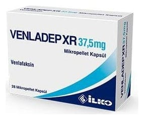

Venladep XR 37,5 mg Mikropellet Kapsül ,14 Kapsül

Ne için kullanılır
KT · Bölüm 1• VENLADEP XR venlafaksin etkin maddesini içerir. • Uzatılmış salımlı mikropellet kapsül formundadır. Serotonin ve noradrenalin geri alım inhibitörleri (SNGAİ'ler) olarak isimlendirilen ilaç grubuna ait bir antidepresandır. • Kutuda 14 ve 28 mikropellet kapsül içeren blister ambalajlardadır. • Majör depresyonun tedavisinde, majör depresyonun nüksünün ve yeni epizodların (atakların) engellenmesinde, yaygın anksiyete (kaygı) bozukluğu (YAB) tedavisinde, sosyal fobi (sosyal kaygı bozukluğu) tedavisinde, agorafobi (hastanın panik atağının ortaya çıkabileceğini hissettiği yerlerde bulunmaktan korkması) ile birlikte veya agorafobi olmaksızın görülen panik bozukluğu tedavisinde kullanılır.